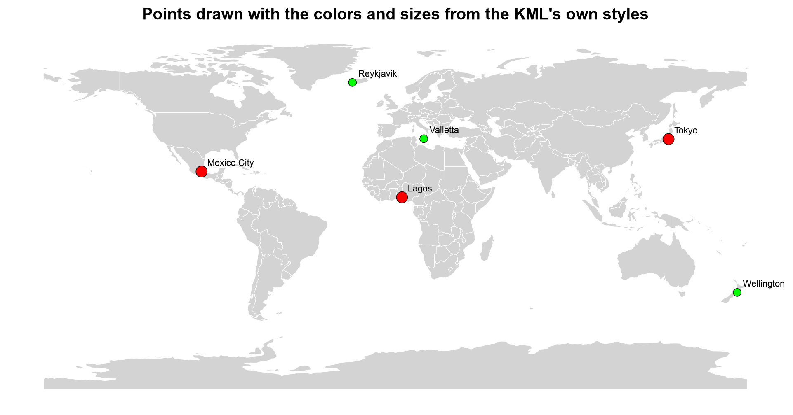
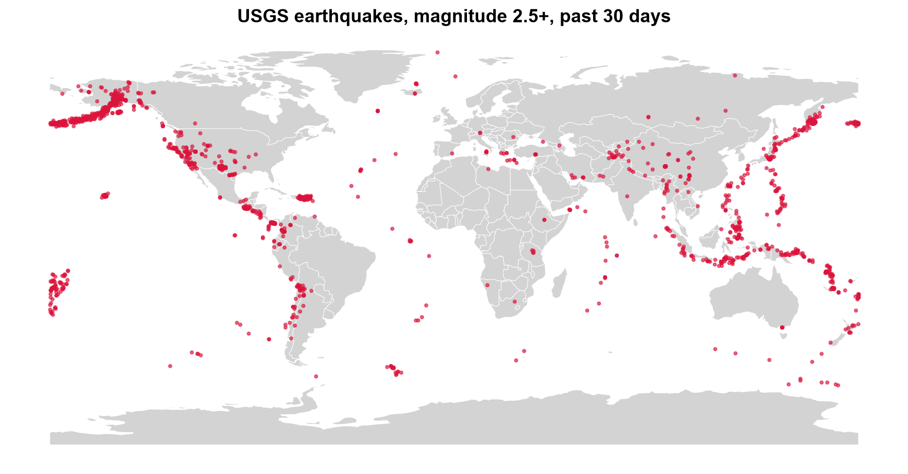
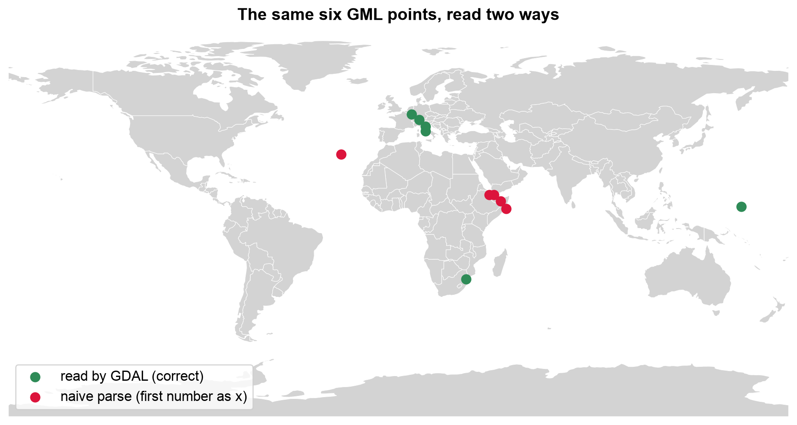
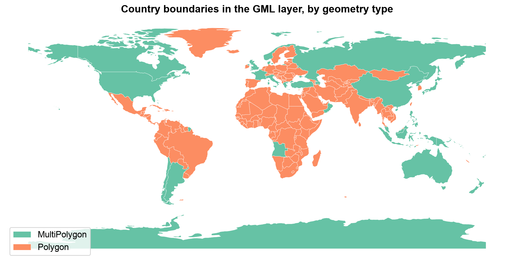

Remark
Please be aware that these lecture notes are accessible online in an ‘early access’ format. They are actively being developed, and certain sections will be further enriched to provide a comprehensive understanding of the subject matter.
3.4. KML and GML#
3.4.1. Learning Objectives#
By the end of this section, you should be able to:
Describe KML’s role in visualization-oriented sharing with Google Earth and Google Maps.
Describe GML’s role as the OGC’s general-purpose XML encoding for government and Spatial Data Infrastructure (SDI) data exchange.
Read KML and GML files in Python, list their layers, and recognize when direct XML parsing is needed.
Explain what is lost when a styled KML is read as data, and recover styling from the XML.
Explain why GML coordinate order can differ from the longitude-latitude order you expect, and how
srsNamesignals it.Recognize geometry-type heterogeneity within a GML layer and explain why it matters downstream.
Section Goal
KML and GML are both XML-based, but they serve different audiences: KML favors visual styling for Google Earth and Google Maps, while GML favors expressive, standards-based feature schemas for spatial data infrastructures. This section shows how to recognize and read each one, and flags a data-quality issue — mixed geometry types — that GML sources commonly introduce.
3.4.2. KML — Keyhole Markup Language#
KML (Keyhole Markup Language) is an XML-based format originally developed for Google Earth and Google Maps. It is now an OGC standard [Wilson, 2008] and is widely used for publishing and sharing geographic data on the web.
3.4.2.1. Structure#
KML files encode geographic features as XML elements nested within a hierarchical document structure. Features can carry stylistic information (colors, icons, line weights) and temporal data alongside their geometry.
<?xml version="1.0" encoding="UTF-8"?>
<kml xmlns="http://www.opengis.net/kml/2.2">
<Placemark>
<name>Eiffel Tower</name>
<Point>
<coordinates>2.2945,48.8584,0</coordinates>
</Point>
</Placemark>
</kml>
Element |
Role |
|---|---|
|
The root element; its namespace identifies the KML version |
|
Containers that organize features into a hierarchy; tools often treat each folder as a layer |
|
One feature, with a name, a description, and a geometry |
|
Geometry; a single folder may mix these freely |
|
Presentation: icon, color, and line width, defined once and referenced by features |
|
Custom attributes, as name-value pairs or typed fields |
|
Time information, used for animation in Google Earth |
Three rules about positions explain most KML surprises:
Order is
longitude,latitude,altitude, separated by commas with no spaces inside one position. Spaces separate positions in a line or ring.The CRS is fixed: KML always uses WGS 84 (EPSG:4326), as GeoJSON does.
The third value is altitude in meters (the Eiffel Tower example gives 0). It is stored with the geometry, so a KML point can be a 3D point.
KML files are often delivered as KMZ, a ZIP archive containing the KML (conventionally doc.kml) plus any icons or images it references.
The first cell writes the Eiffel Tower example to disk and reads it with GeoPandas, to check what comes back.
CRS : EPSG:4326
Geometry : ['Point']
Has altitude : [True]
First position : (2.2945, 48.8584, 0.0)
| Name | geometry | |
|---|---|---|
| 0 | Eiffel Tower | POINT Z (2.2945 48.8584 0) |
GeoPandas reports EPSG:4326 and a three-dimensional point: the altitude 0 in the file became a z value, so the geometry prints as POINT Z. The first position is (2.2945, 48.8584), longitude first, as the rules above state.
3.4.2.2. When to Use KML#
Sharing data for visualization in Google Earth or Google Maps.
Delivering spatial data with embedded styling information.
Publishing field survey waypoints and tracks.
Limitations: the fixed WGS 84 CRS, a fixed vocabulary of elements (anything else must go into ExtendedData), and styling that is mixed into the file but is not part of the data model that GIS tools read.
3.4.2.3. Reading KML in Python#
To see what a KML really contains, we build a small one by hand, styled the way Google Earth files are. It has a shared Style for each size class, three folders, and a mix of geometry types, and it stores a custom attribute in ExtendedData. The cities and the attribute are illustrative only.
Layers (one per folder): ['Large cities', 'Small cities', 'Routes and areas']
Large cities 3 features, geometry ['Point'], has altitude [True, True, True]
Small cities 3 features, geometry ['Point'], has altitude [True, True, True]
Routes and areas 2 features, geometry ['LineString', 'Polygon'], has altitude [False, False]
Three things to notice in the output. Folders became layers. One folder mixed geometry types (a line and a polygon together), which a Shapefile could not do. And altitude was kept: the point layers are 3D points (has_z is true), while the line and polygon, written without altitude, are 2D.
Now look at the table itself. GDAL adds a long list of KML bookkeeping columns (timestamp, altitudeMode, tessellate, drawOrder, and others) [GDAL/OGR contributors, 2026], most of them empty. The data you care about are the Name, the description (which still contains HTML), and the custom attribute from ExtendedData, which became an ordinary column.
All columns: ['id', 'Name', 'description', 'timestamp', 'begin', 'end', 'altitudeMode', 'tessellate', 'extrude', 'visibility', 'drawOrder', 'icon', 'size_class', 'geometry']
| Name | description | size_class | geometry | |
|---|---|---|---|---|
| 0 | Tokyo | <b>Large</b> city | large | POINT Z (139.69 35.69 40) |
| 1 | Lagos | NaN | large | POINT Z (3.39 6.52 0) |
| 2 | Mexico City | NaN | large | POINT Z (-99.13 19.43 2240) |
3.4.2.3.1. What Is Lost: Styling#
The colors and sizes in the Style elements are not in the table. KML mixes presentation into the file, but a GIS table has no place for it. The reference to a style (styleUrl) is gone too. If you need the styling, for example to reproduce the intended look of a Google Earth map, you must read the XML directly.
KML colors have one more trap: they are written aabbggrr (alpha, blue, green, red), the reverse of the web’s #rrggbb. The cell below parses the styles and each placemark’s reference with Python’s built-in xml.etree, converts the colors, and draws the points as the author styled them over a Natural Earth [Natural Earth contributors, 2026] country backdrop.
Styles in the file: {'small': {'color': '#00ff00', 'scale': 0.8}, 'large': {'color': '#ff0000', 'scale': 1.6}}


Fig. 3.13 The six demonstration cities drawn with the colors and sizes recovered from the KML’s own Style elements.#
In Fig. 3.13, the large cities (Tokyo, Lagos, Mexico City) are big red markers and the small ones (Reykjavik, Wellington, Valletta) are small green markers, exactly as the two styles define them. Once reordered from aabbggrr, ff0000ff is opaque red and ff00ff00 is opaque green. None of this information was in the GeoDataFrame; it came entirely from parsing the XML.
3.4.2.3.2. KMZ: The Zipped Form#
A KMZ is simply a ZIP archive, and GDAL can read it directly, with no unzipping step. The cell below packs the KML into a KMZ and lists its layers.
Layers read straight from the KMZ: ['Large cities', 'Small cities', 'Routes and areas']
KML: 2,450 bytes KMZ: 715 bytes
The KMZ holds the same three layers in 715 bytes against 2,450 for the plain KML, because ZIP compression shrinks this small, repetitive XML to under a third of its size.
Note: KML files are human-readable XML, but large KML files with complex styling can be slow to parse. For analysis, convert KML to GeoJSON or GeoPackage first (see conversion workflow).
Because a folder is a layer and a layer may mix geometry types, a robust conversion has two steps: read every layer (not just the first), and keep each geometry type in its own output layer. The function below reads all layers into one table with a layer column. The cell after it writes one GeoPackage layer per folder and geometry type, dropping the empty bookkeeping columns, and exports the whole thing as a single GeoJSON.
| layer | geometry_type | features | |
|---|---|---|---|
| 0 | Large cities | Point | 3 |
| 1 | Routes and areas | LineString | 1 |
| 2 | Routes and areas | Polygon | 1 |
| 3 | Small cities | Point | 3 |
GeoPackage layers: [['Large cities (Point)', 'Point Z'], ['Routes and areas (LineString)', 'LineString'], ['Routes and areas (Polygon)', 'Polygon'], ['Small cities (Point)', 'Point Z']]
GeoJSON: 2,001 bytes, 8 features
The “Routes and areas” folder splits into a LineString layer and a Polygon layer, which gives four GeoPackage layers in all; the point layers keep their altitude (Point Z). The single GeoJSON holds all eight features in 2,001 bytes, so mixed geometry types are fine there, and the folder names survive only in the layer column.
3.4.2.3.3. A Real-World KML: The USGS Earthquake Feed#
The earlier version of this section used a USGS earthquake feed [U.S. Geological Survey, n.d.]: the magnitude 2.5+, past-30-days KML, downloadable from the USGS Earthquake Hazards Program feeds at 2.5_month_depth.kml. Each earthquake is a styled Placemark, just like the cities above. The feed updates continuously, so the exact placemarks differ from any snapshot, and the folder (layer) names may change. That is why the cell lists the layers first and reads all of them with the function above, rather than naming one. It is optional: it is skipped if the download fails.
Layers in the feed: ['USGS Magnitude 2.5+ Earthquakes, Past Month', 'Magnitude 7', 'Magnitude 6', 'Magnitude 5', 'Magnitude 4', 'Magnitude 3', 'Magnitude 2']
2006 placemarks


Fig. 3.14 USGS earthquakes of magnitude 2.5 and above over a 30-day window, read from the KML feed (a snapshot).#
The 1,899 placemarks in Fig. 3.14 trace the plate boundaries: the Aleutian arc and Alaska, the western margin of the Americas from California to Chile, the island arcs from Japan through the Philippines and Indonesia, and a looser band across the Mediterranean, Iran, and the Himalaya. Isolated clusters at Hawaii and Puerto Rico stand out against the nearly empty plate interiors. The feed is a rolling window, so a rerun gives a different snapshot with the same pattern.
3.4.3. GML — Geography Markup Language#
GML (Geography Markup Language) is the OGC’s comprehensive XML encoding standard for geographic features [Portele, 2007]. It is more expressive than KML, supporting complex schemas, coordinate systems, and feature relationships. GML is commonly used in government data portals and national SDI (Spatial Data Infrastructure) systems throughout Europe and elsewhere. It is also the default response format of WFS (Web Feature Service), the OGC standard for requesting features from a server.
3.4.3.1. Characteristics#
Verbose XML syntax with namespace declarations and schema references.
Supports complex feature schemas with type inheritance.
Multiple GML profile levels (Simple Features, Full GML).
Files frequently require the
lxmllibrary for robust parsing.A single GML file can bundle several layers; list them before loading.
GML version |
Typical context |
Notable features |
|---|---|---|
2.1.2 |
WFS 1.0 responses |
Simple; coordinates in |
3.1.1 |
WFS 1.1 responses |
Adds curves, surfaces, and |
3.2.1 |
WFS 2.0, INSPIRE, ISO 19136 |
Current standard; multi-surface geometries; stable identifiers |
3.4.3.2. Structure#
Unlike KML, GML does not define the features themselves: each data provider defines its own application schema (usually an XSD file), and the GML document contains features of those types. The generic parts come from the GML namespace.
Part |
Role |
|---|---|
|
A wrapper for one feature in the collection |
Application element (for example |
The feature itself; its name is the feature type, and each child element is a property |
Geometry property |
Contains a GML geometry such as |
|
Names the coordinate reference system of the geometry |
|
The coordinate values, in the form that the GML version uses |
|
The application schema, and GDAL’s cached schema guess for documents without one |
To work with GML without depending on an external service, the next cell builds a WFS-style GML 2 document by hand from two layers we already know: country polygons (countries) and populated places (cities), which together form one document with two feature types, just as a WFS server would return for a request naming two layers. Writing it makes the structure concrete. After writing, the cell prints one complete cities feature.
wfs_demo.gml: 337 KB of XML for 420 features
<gml:featureMember><demo:cities fid="cities.0"><demo:name>Vatican City</demo:name><demo:adm0name>Vatican</demo:adm0name><demo:pop_max>832</demo:pop_max><demo:geometry><gml:Point srsName="EPSG:4326"><gml:coordinates>12.4534,41.9033</gml:coordinates></gml:Point></demo:geometry></demo:cities></gml:featureMember>
One cities feature shows the anatomy: an fid attribute on the feature element, one element for each property (name, adm0name, pop_max), and a geometry property wrapping a gml:Point that carries its srsName. The coordinates 12.4534,41.9033 are longitude first, the GML 2 convention. The 420 features take 337 KB of XML, which is the price of that explicitness.
3.4.3.3. Reading GML in Python#
A GML document can contain more than one layer, one per feature type, so inspect it first. GDAL’s GML driver has to scan the document to discover the feature types and their properties. To avoid repeating the scan on every read, it saves what it learns in a small sidecar file with the extension .gfs [GDAL/OGR contributors, 2026]. The cell below lists the files before and after the first listing, so you can see the sidecar appear. If you later edit a GML file by hand and the structure changes, delete the .gfs so GDAL scans the document again.
Before listing layers: ['wfs_demo.gml']
Layers : ['countries', 'cities']
After listing layers : ['wfs_demo.gfs', 'wfs_demo.gml']
Layer 'countries': 177 features, CRS EPSG:4326
| gml_id | NAME | CONTINENT | POP_EST | |
|---|---|---|---|---|
| 0 | countries.0 | Fiji | Oceania | 889953.0 |
| 1 | countries.1 | Tanzania | Africa | 58005463.0 |
| 2 | countries.2 | W. Sahara | Africa | 603253.0 |
| 3 | countries.3 | Canada | North America | 37589262.0 |
| 4 | countries.4 | United States of America | North America | 328239523.0 |
Listing the layers triggers the scan: before it only wfs_demo.gml exists, and afterwards GDAL’s .gfs sidecar sits beside it. The two feature types appear as layers, and the gml_id column exposes each feature’s fid. The population values were written as 889953.0, so GDAL inferred a floating-point type rather than an integer.
For files with complex namespaces or non-standard schemas, direct XML parsing with lxml may be necessary to extract features reliably. For very large documents, parse as a stream instead of loading the whole tree: Python’s built-in ElementTree.iterparse (and lxml’s equivalent) hands you each element as it is completed, and you can discard it afterwards. The cell below counts the features of each type in the document that way.
Features per type, counted by streaming the XML: {'countries': 177, 'cities': 243}
The streamed counts (177 countries and 243 cities) match what GDAL read, and the whole tree was never held in memory.
3.4.3.4. Coordinate Order and srsName#
GML records the CRS in an srsName attribute, and the form of that name can change the order of the coordinates. Under the rules for GML 3 [Portele, 2007], a CRS written as an EPSG URN follows the axis order defined by EPSG, and EPSG defines WGS 84 (EPSG:4326) as latitude first. This is the opposite of GeoJSON and KML.
|
Coordinate order |
|---|---|
|
longitude, latitude (the older, GML 2 convention) |
|
latitude, longitude |
|
latitude, longitude |
|
longitude, latitude |
GDAL knows these rules and reads such files correctly [GDAL/OGR contributors, 2026]. The risk appears when you parse the XML yourself and assume the first number is the longitude. To demonstrate, the cell below has GDAL write six places as GML 3.2 (its default form), then reads the coordinates twice: naively, with the first number as x, and with GDAL.
srsName : urn:ogc:def:crs:EPSG::4326
gml:pos : 41.903282 12.453387 <- first number is the LATITUDE
Vatican City, naive parse: (41.90, 12.45)
Vatican City, via GDAL : (12.45, 41.90)
Naive points with an impossible latitude (beyond +/-90): 1 of 6


Fig. 3.15 The same six GML points read by GDAL (green) and by a naive parse that takes the first number as longitude (red).#
In Fig. 3.15, the green points are where the places really are: four small European states, Eswatini, and Micronesia. The red points are the same numbers read in the wrong order. The European ones land in East Africa and the Arabian Sea, Eswatini’s lands in the Atlantic, and Micronesia’s falls off the map entirely because its longitude of about 158° becomes an impossible latitude. A wrong order produces plausible-looking coordinates for most places, and only an out-of-range value gives it away.
3.4.3.5. Watch for Mixed Geometry Types#
GML sources frequently mix Polygon and MultiPolygon geometries within what is
conceptually a single layer — for example, a district boundary made of one contiguous
polygon next to a district split across two disjoint parcels. This is legal GML but
becomes a problem the moment you try to load the layer into a database table that
expects one geometry type per column.
Our countries layer shows this directly. Countries made of separate landmasses or islands are encoded as MultiPolygon, and single contiguous ones as Polygon. GDAL cannot declare one geometry type for such a layer, so it reports it as Unknown. The cell counts the types and maps them.
Geometry type GDAL reports for the layer: Unknown
Polygon 148
MultiPolygon 29
Name: count, dtype: int64


Fig. 3.16 Country boundaries in the GML layer, colored by geometry type.#
Fig. 3.16 shows that geometry type follows geography. The 29 MultiPolygon countries (green) are those with islands or separate parts, such as the United States, Canada, Russia, Australia, Indonesia, and Angola with its Cabinda exclave, while the 148 plain Polygon countries (orange) are mostly single landmasses, including Greenland and Madagascar, which are one polygon each at this resolution. Neither type is an error, which is why GDAL can only report Unknown for the layer.
Detecting this early — right after loading, before any spatial join or database
load — avoids failures much later in a pipeline. The Spatial Database Systems section
shows how to normalize this heterogeneity before loading the result into PostGIS. The core idea is to convert toward the more general type: wrapping each Polygon in a one-part MultiPolygon loses nothing, while the reverse would discard parts. The cell shows the idea in three lines.
Before: {'Polygon': 148, 'MultiPolygon': 29}
After : {'MultiPolygon': 177}
Total area unchanged: True
Wrapping each Polygon in a one-part MultiPolygon makes all 177 countries uniform, and the total area is unchanged (compared in an equal-area CRS, EPSG:6933, to within a square meter). Nothing was lost, which is not true of the reverse conversion.
3.4.3.6. Requesting GML from a WFS#
Most real GML arrives as a WFS response, and a WFS request is just a URL with parameters. Everything you learned about narrow requests applies: ask for specific feature types, a bounding box, and a feature limit, and cache the raw response. The cell below builds a GetFeature request for the public MapServer demo WFS that the earlier version of this section used, asking for its two layers (world continents and world cities) in one response, and then optionally fetches it. The continents layer is a good place to check geometry types, since continents made of separate landmasses could be encoded as MultiPolygon. The fetch is skipped if the service is unreachable.
https://demo.mapserver.org/cgi-bin/wfs?SERVICE=WFS&VERSION=1.0.0&REQUEST=GetFeature&TYPENAME=continents,cities
Layers in the WFS response: ['continents', 'cities']
Continent geometry types: {'Polygon': 27458}
In this response all 27,458 continents features are plain Polygon: the service publishes the layer as thousands of single-part pieces, so there is nothing to normalize here. The check costs one line, and the answer depends on the source, so look rather than assume.
3.4.4. Comparing KML and GML#
Aspect |
KML |
GML |
|---|---|---|
Main purpose |
Visual sharing in Google Earth and Google Maps |
Standards-based exchange for government and SDI systems |
Schema |
Fixed vocabulary; custom attributes in |
Application schema defined by the provider (XSD) |
CRS |
Always WGS 84, longitude-latitude-altitude |
Any CRS, named by |
Styling |
Built in ( |
None |
Layers |
Folders |
Feature types |
Geometry types in one layer |
May be mixed |
May be mixed (for example, |
Typical sources |
Google Earth, GPS and survey apps, public feeds |
WFS servers, INSPIRE, national mapping agencies |
Packaging |
Single file, or KMZ (zipped) |
One or more files, often with |
Best use |
Presentation |
Interchange of rich, typed data |
Practice
Export one layer of your choice from a GeoPackage to GML with GDAL (driver="GML"), then open the .gml and .xsd files in a text editor. Find the srsName and the first coordinate pair. Read the file back with GeoPandas and check that the coordinates match the original. Then write a short KML by hand with two styles and three placemarks, read it with GeoPandas, and recover each placemark’s color from the XML.
3.4.5. Key Terms#
Term |
Meaning |
|---|---|
KML |
Keyhole Markup Language: an XML format for visual sharing of geographic data. |
KMZ |
A ZIP archive containing a KML file and its resources. |
Placemark |
A single KML feature: a name, a description, and a geometry. |
|
The KML element for custom attributes. |
|
The byte order of KML color values (alpha, blue, green, red). |
GML |
Geography Markup Language: the OGC’s general-purpose XML encoding for geographic features. |
Application schema |
The feature types and properties a data provider defines for its GML (usually an XSD). |
|
The attribute that names a GML geometry’s CRS, and signals its coordinate order. |
WFS |
Web Feature Service: an OGC service whose default response is GML. |
|
GDAL’s cached description of a GML document’s feature types. |
3.4.6. Review Questions#
In what order are the three values of a KML coordinate, and what is the CRS?
A KML has three folders. How many layers does GDAL see, and can a layer mix geometry types?
After reading a styled KML with GeoPandas, the icon colors are missing. Why, and how would you recover them?
A KML color is
ff0000ff. What color is it?Why does a GML point at
<gml:pos>41.9 12.5</gml:pos>with an EPSG URNsrsNamelie in Italy, not in East Africa?What is a
.gfsfile, and when should you delete it?A GML layer contains 118
Polygonand 7MultiPolygonfeatures. What problem does this cause for a database load, and what is the lossless fix?When would you choose KML over GML to deliver a dataset, and when the reverse?
3.4.7. Summary#
KML optimizes for visual sharing in consumer mapping tools, while GML optimizes for
expressive, standards-based interchange in government and SDI systems — both trade
verbosity for those benefits, so convert them to GeoPackage or GeoJSON for analysis
once you have the data you need. KML folders become layers, and its styling is
presentation that GIS tables do not carry, so recover it from the XML when you need it. GML in particular can bundle several layers, record coordinates in latitude-first order depending on its srsName, and mix
Polygon/MultiPolygon geometries for one conceptual feature type, a heterogeneity
that must be detected and normalized before database loading.
The next section turns to OpenStreetMap, a global, tag-based data source rather than a single downloadable file format.